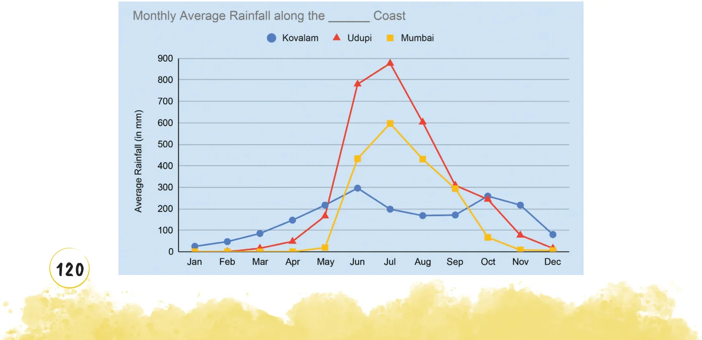
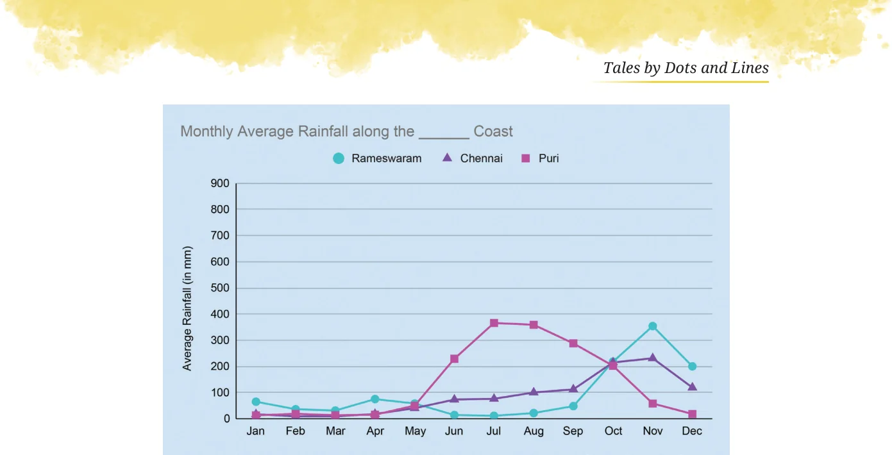

The following graphs show monthly average rainfall data of a few cities.


Source: weather-and-climate.com
What could be the possible method to compile this data? This data shows the monthly average rainfall in 6 cities. This means rainfall data is collected over a few years in every city. The total rainfall in a month, say June, across years is averaged to get the monthly average rainfall in June in a city.
Mark these cities on a map of India. What is common to how they are grouped in the graphs? Share your observations and inferences about the graphs. Kovalam, Udupi, and Mumbai are along the west coast. Rameswaram, Chennai, and Puri are along the east coast. It appears that regions along the west coast receive more rain. Identify the peak months and low months of rainfall for each city. Udupi, Mumbai, and Kovalam have peak rainfall during June - August. Rameswaram gets most of its rain during October - December. Chennai starts getting rain from June onwards, which peaks in November, and continues till December. Puri, although on the east coast, gets its peak rainfall during July - September. January - March are dry months, with low rainfall, for all the cities. Rameswaram receives very little rain from January - September. Read about the south-west monsoon and north-east monsoon and which regions come under the influence of these and when.